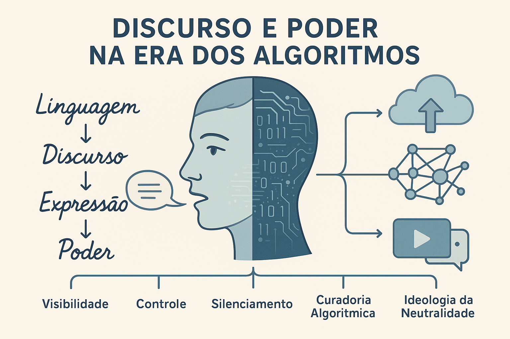

Discurso e Poder na Era dos Algoritmos
Na era digital, os sistemas algorítmicos deixaram de ser simples instrumentos técnicos e tornaram-se mediadores centrais do discurso público, da visibilidade e da circulação de ideias. Assim, o campo da Análise Crítica do Discurso (ACD) é desafiado a compreender como estruturas de poder e de linguagem se manifestam nos algoritmos. Surge a questão: quem decide o que é visível, quem é silenciado e como a linguagem é moldada por lógicas invisíveis?
Algoritmos como mediadores do discurso público
Os algoritmos das plataformas digitais moldam o que é visto, lido e compartilhado. Em outras palavras, são eles que estruturam o campo discursivo contemporâneo.
Conforme observa Max Williams (2023):
“o direito à livre expressão, nas democracias atuais, é cada vez mais mediado por sistemas algorítmicos opacos, guiados por interesses comerciais, que determinam quais discursos serão visíveis e quais serão suprimidos.”
A visibilidade discursiva, portanto, não depende mais apenas do emissor ou do receptor, mas de uma configuração automatizada que seleciona, hierarquiza e filtra as vozes no espaço digital.
Poder, silenciamento e legitimação algorítmica
A ACD mostra que nenhum discurso é neutro — e o mesmo vale para os algoritmos. Eles funcionam em contextos ideológicos que produzem e reproduzem poder.
Como explica Radosław Sierocki (2024):
“o poder dos algoritmos não reside apenas em sua capacidade técnica de processar dados, mas na crença social em sua autoridade e neutralidade; é essa crença que os torna agentes discursivos poderosos.”
Assim, o discurso sobre os algoritmos — que os apresenta como objetivos e imparciais — reforça sua legitimidade e amplia sua influência sobre as práticas discursivas cotidianas.
Linguagem, ideologia e regimes algorítmicos
A dimensão ideológica da linguagem é central nesse debate. Como afirmam Shahab Rehman e colegas (2023),
“as plataformas de redes sociais tornaram-se arenas discursivas em que algoritmos determinam o que ganha visibilidade e o que é marginalizado, moldando o discurso político, reforçando normas sociais e exercendo poder simbólico.”
Os algoritmos operam, assim, como regimes discursivos — criam sentidos, sustentam visões de mundo e silenciam alternativas, mesmo quando não explicitamente programados para isso.
Transparência, agência e ética discursiva
Se os algoritmos filtram e organizam discursos, a democracia discursiva — isto é, a circulação equitativa de vozes e perspectivas — fica ameaçada. Williams (2023) adverte que:
“a curadoria algorítmica de conteúdo nas redes sociais enfraquece a legitimidade do discurso democrático, sobretudo no caso de vozes marginalizadas que desafiam as normas dominantes.”
Nesse contexto, a ACD precisa incorporar a dimensão tecnológica e ética da linguagem: não se trata apenas de analisar quem fala, mas também que sistemas decidem o que será ouvido.
Direções metodológicas para a análise crítica
Pesquisadores que desejam investigar o tema podem explorar algumas linhas de análise. É possível examinar:
- As formas de visibilidade e invisibilidade produzidas pelos algoritmos — que discursos são promovidos e quais permanecem ocultos;
- O vocabulário de legitimação técnica — termos como “personalização” e “engajamento” que naturalizam práticas de controle simbólico;
- A ideologia da neutralidade tecnológica — o discurso que apresenta os algoritmos como objetivos e imparciais;
- A agência atribuída aos sistemas automatizados — quem define seus critérios, quem os interpreta e quem os contesta;
- A materialidade do discurso digital — interfaces, curadorias invisíveis e “caixas-pretas” que moldam o acesso à informação.
Conclusão
O estudo do Discurso e Poder na Era dos Algoritmos aponta para uma transformação profunda da esfera discursiva. Os algoritmos não são meros instrumentos de transmissão, mas agentes simbólicos que moldam a própria possibilidade de fala e de escuta. Reconhecer esse novo regime discursivo é fundamental para compreender as relações contemporâneas entre linguagem, poder e tecnologia.